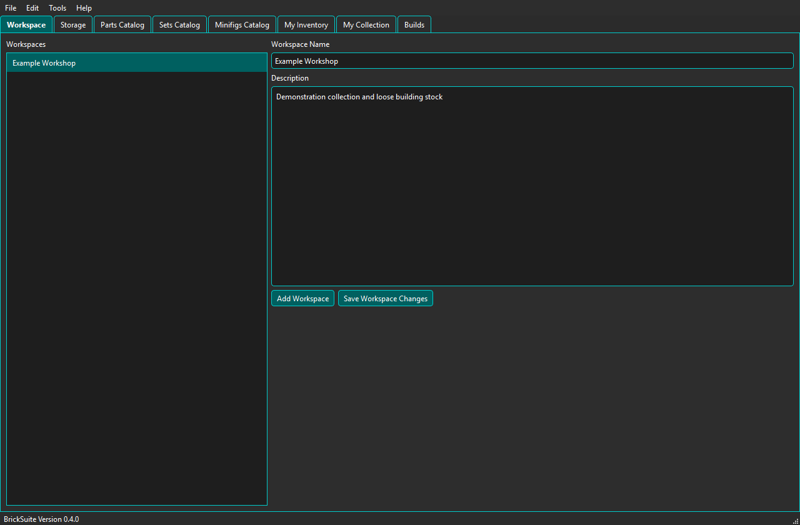

BrickSuite connects reference catalogs, loose inventory, Builds, and physical Collection items while preserving where pieces are stored and how they moved.

Create or select the Workspace representing the workshop you want to manage.
Create the physical hierarchy you use. Active leaf locations may allow Inventory, Collection, or Both; parent locations organize the hierarchy but are not destinations.
Configure Rebrickable or Brickset under Settings → APIs when you want API-backed composition, images, enrichment, or instructions. Download-based catalog imports and local workflows do not require a continuous connection.
Populate Parts, Sets, and Minifigs from supported Rebrickable downloads. Catalogs describe reference identities; they do not assert ownership.
Choose Tools → Import Rebrickable Data Files... and select a folder containing official Rebrickable .csv or .csv.zip bulk downloads. BrickSuite validates a visible plan before enabling Import. All twelve datasets are supported: Themes, Colors, Part Categories, Parts, Elements, Part Relationships, Sets, Minifigs, Inventories, Inventory Parts, Inventory Minifigs, and Inventory Sets. Elements map an exact Rebrickable Element ID to its exact Part and Color; they do not replace canonical Part numbers.
Rebrickable's inventory files contain both Set and Minifig inventory identities. BrickSuite recognizes both, persists revision history for Sets, and intentionally excludes Minifig-owned Part rows from Set composition.
Revision-backed composition is catalog data, not owned inventory. Historical Set revisions are retained, and BrickSuite selects the highest complete Rebrickable revision as preferred after all composition files finish successfully. A valid preferred revision supplies Set composition; existing legacy catalog composition remains the fallback when no preferred revision exists. Catalog spare rows remain available as provider metadata but are not copied into required Build pieces and do not imply physical ownership. A Build keeps the requirement snapshot created at that time, so later catalog imports do not rewrite it.
Each supported dataset uses its own transaction. A failed or cancelled current dataset is rolled back while earlier committed datasets remain available; dependent datasets are blocked, while independent datasets may continue. Required identities are checked before authoritative snapshot synchronization. BrickSuite does not download these files automatically.
Add or import loose physical pieces with exact Part, Color, Manufacturer, condition, ownership, quantity, and Storage.
Create Set, Minifig, or MOC Builds. Requirements can be allocated, deliberately substituted, pulled, reconciled, completed, cancelled, or disassembled.
Record each physical Set, Minifig, or MOC independently from loose inventory and Build history.
Create a manual backup and consider verified automatic backups. Use Tools → Database Status & Integrity for health checks and recovery guidance.
BrickSuite can also prepare supported LEGO geometry for 3D printing and provides LEGO Fit Calibration. See 3D Printing for the workflow.
State, Condition, Completeness, and Collection Location describe different facts and may be changed independently.
Continue to Quick Start | Help Home
For optional source-backed 3D viewing, printing, and calibration, configure the installed LDraw library in Edit → Settings → 3D Models. See LDraw setup.